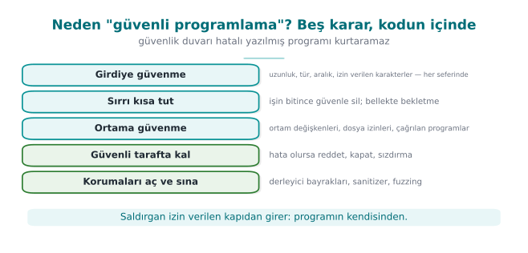
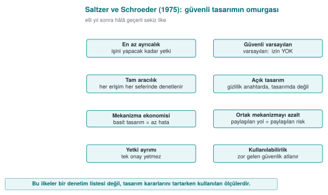
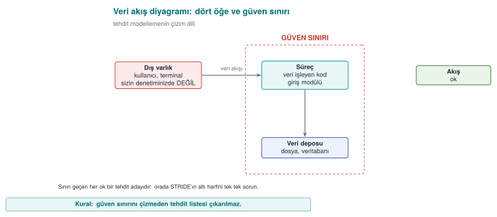
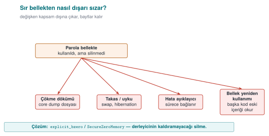
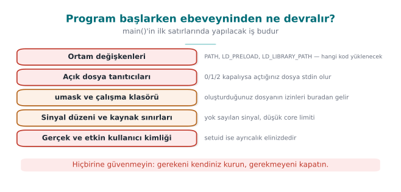
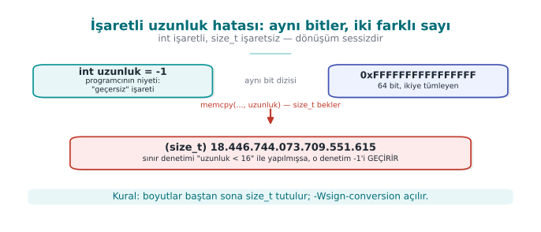
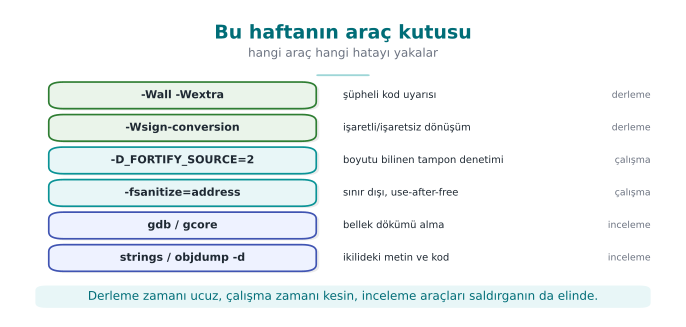

Previous slide Next slide Toggle fullscreen Open presenter view
CEN429 Secure Programming · Week 1
Introduction to Secure Programming and the Application Protection Plan
CEN429 Secure Programming — Week 1
Asst. Prof. Dr. Uğur CORUH · 18.09.2026
RTEU Computer Engineering · 2026-2027 Fall
CEN429 Secure Programming · Week 1
Today's plan (3 hours)
Hour
Topic
1
Course introduction · What is security? · The attacker · Principles · Overview of application protection
2
Protection plan · STRIDE and risk score · Attack tree · Worked example "Vault" · Class exercise
3
Demo 1–2 · Secure start-up · Overflows · Demo 3–4 · Memory management · Partitioning · Secure process · Project
Learning outcomes: LO.1 (identifies and classifies vulnerabilities) · LO.5 (produces a software plan using secure design principles)
RTEU Computer Engineering · 2026-2027 Fall
CEN429 Secure Programming · Week 1
How We're Starting This Course
This is the course's first week ; we don't build on a previous week.
Assumed prior knowledge: functions, arrays, and pointers in C; cd and ls in a terminal (PowerShell or Linux).
The "This Week's Concepts" table below does not define this week's terms one by one — it shows which section teaches each one.
The pattern we'll follow all term: buggy code → attack → fix.
RTEU Computer Engineering · 2026-2027 Fall
CEN429 Secure Programming · Week 1
This Week's Concepts
Each term is defined once, where it first appears in the body; here we only mark where .
Concept
Where
Security
Section 1
Asset
Section 1
Threat and vulnerability
Section 1
The CIA triad
Section 1
Attacker model
Section 1
White-box / MATE
Section 1
Secure design principles
Section 1
Defence in depth
Section 2
Trade-off
Section 2
Threat modelling
Section 3
STRIDE
Section 3
Attack tree
Section 3
Data flow diagram (DFD)
Section 3
RTEU Computer Engineering · 2026-2027 Fall
CEN429 Secure Programming · Week 1
How the Demos Work
One source, two/three environments: Windows (Visual Studio 2022 Community or PowerShell), WSL , and Linux
Build: Windows .\build.ps1 · WSL/Linux ./build.sh — build once before class
Run: Windows .\demo.ps1 · WSL/Linux sh demo.sh
Visual Studio: File > Open > Folder → code → configuration Windows (MSVC) → Build > Build All
4 demos this week, under code/week-01
⚠️ Ethics: Every demo runs only inside its own folder and asks for no administrator rights. Only try these techniques on your own computer .
RTEU Computer Engineering · 2026-2027 Fall
CEN429 Secure Programming · Week 1
A short history — the idea of secure programming
1975 — Saltzer & Schroeder: the 8 principles of secure design (least privilege, defence in depth…)1970s–80s — the CIA triad becomes a common language1998–99 — STRIDE at Microsoft; Schneier introduces attack trees 2001–03 — Building Secure Software and the Secure Programming Cookbook (the course's main source)
Today's tools (CIA · attacker model · STRIDE · attack tree) are products of this lineage.
RTEU Computer Engineering · 2026-2027 Fall
CEN429 Secure Programming · Week 1
The five decisions of secure programming — diagram

RTEU Computer Engineering · 2026-2027 Fall
CEN429 Secure Programming · Week 1
How the course runs
One term project: a C/C++ application + a security guide written "as if it were going through certification"
Midterm check: week 7 demo · Final check: week 15 demo
Two quizzes: week 8 (1–6) · week 16 (9–14)Grade: Midterm = 0.6·Project1 + 0.4·Quiz1 · Final = 0.7·Project2 + 0.3·Quiz2
Every week: buggy code → attack → fix
⚠️ Ethics: Only try these techniques on your own computer and on the demos provided.
RTEU Computer Engineering · 2026-2027 Fall
CEN429 Secure Programming · Week 1
1. What is security?
RTEU Computer Engineering · 2026-2027 Fall
CEN429 Secure Programming · Week 1
The Vault analogy
Concept
Vault
Software
Asset Money
Password, payment key
Threat Thief
Someone who wants to steal the password
Vulnerability Faulty lock
An unchecked strcpy
Attack Picking the lock
Becoming administrator with a long username
Countermeasure A new lock
Length checking
Risk Probability × impact
"If it's found, every account is gone"
RTEU Computer Engineering · 2026-2027 Fall
CEN429 Secure Programming · Week 1
Threat · vulnerability · asset — diagram
RTEU Computer Engineering · 2026-2027 Fall
CEN429 Secure Programming · Week 1
Security's three goals: CIA
Question
If broken
C onfidentialityCan only authorized parties see it?
Passwords leak
I ntegrityCan it be changed without authorization?
A balance, a grade changes
A vailabilityDoes it work when needed?
The system crashes
+ Authentication · Authorization · Non-repudiation
Question: A banking app writes the balance unencrypted → ? · The recipient IBAN changes in transit → ? · It crashes on a holiday night → ?
RTEU Computer Engineering · 2026-2027 Fall
CEN429 Secure Programming · Week 1
The CIA triad — diagram
Answer to the question: balance unencrypted → C ; IBAN changes in transit → I ; crashes on a holiday night → A .
RTEU Computer Engineering · 2026-2027 Fall
CEN429 Secure Programming · Week 1
Goal
Typical countermeasure
Confidentiality Encryption, access control
Integrity Hash, MAC, digital signature
Availability Redundancy, resource limiting
+ Authentication: are you really who you say you are? · Authorization: do you have permission to do this? · Non-repudiation: who did this, and can they deny it afterward?
RTEU Computer Engineering · 2026-2027 Fall
CEN429 Secure Programming · Week 1
Bug ≠ vulnerability, but…
A very large share of security vulnerabilities are ordinary software bugs.
Heartbleed (2014, CVE-2014-0160)
Client: "Send me 64 KB back" — but sends only a few bytes
The server never checks the length → sends back neighboring memory (passwords, keys)
A single missing length check → a significant part of the internet was affected
RTEU Computer Engineering · 2026-2027 Fall
CEN429 Secure Programming · Week 1
Who is the attacker, what can they reach?
Attacker
Access
Defence
Remote
Only network messages
Input validation, TLS
Local user
Files, environment variables
Permissions, secure start-up
Insider
Source code, server
Privilege separation, audit logging
Device owner (white-box) Memory, debugger, binary RASP, obfuscation, white-box
What's different about this course: what do we do if the program runs on the attacker's device ?
RTEU Computer Engineering · 2026-2027 Fall
CEN429 Secure Programming · Week 1
White-box / MATE
MATE (Man-At-The-End): an attacker who owns the program.Reads the code, sees the memory, modifies it.
The real situation for mobile/desktop applications (this course's main theme).
RTEU Computer Engineering · 2026-2027 Fall
CEN429 Secure Programming · Week 1
Attacker models — diagram
RTEU Computer Engineering · 2026-2027 Fall
CEN429 Secure Programming · Week 1
Attackers — real-world examples
Attacker
Example
Remote
Someone attacking a web server
Local user
Another student on a shared server
Insider
An employee abusing their role
Device owner (white-box) Someone trying to crack a mobile payment app on their own phone
Apply each row to your own project: which one is your attacker?
RTEU Computer Engineering · 2026-2027 Fall
CEN429 Secure Programming · Week 1
Secure design principles (Saltzer & Schroeder, 1975)
Principle
One sentence
Least privilege
Run with only the privilege needed
Secure default
The default is "no permission"
Complete mediation
Check every access, every time
Open design
Security rests on the secrecy of the key , not the algorithm
Economy of mechanism
Simple = fewer bugs
Separation of privilege
Two conditions for a critical operation
Least common mechanism
Reduce shared resources
Acceptability
Unusable security gets bypassed
+ Defence in depth: don't rely on one countermeasure, build layers .
RTEU Computer Engineering · 2026-2027 Fall
CEN429 Secure Programming · Week 1
Saltzer and Schroeder's principles — diagram

RTEU Computer Engineering · 2026-2027 Fall
CEN429 Secure Programming · Week 1
Secure design principles — examples (1/2)
Principle
Example
Least privilege
The reporting program runs as an ordinary user, not administrator
Secure default
A new user's yonetici (admin) field starts at 0
Complete mediation
Permission is not checked once and then cached
Open design
You do not write your own encryption algorithm
No principle is abstract; each one shows up as a concrete decision in code.
RTEU Computer Engineering · 2026-2027 Fall
CEN429 Secure Programming · Week 1
Secure design principles — examples (2/2)
Principle
Example
Economy of mechanism
A clear 20-line check beats a "clever" 500-line one
Separation of privilege
Both a password and an SMS code for a money transfer
Least common mechanism
Every session gets its own temporary file
Psychological acceptability
Asking for a password every 5 minutes leads to it being written on paper
Unusable security is bypassed security.
RTEU Computer Engineering · 2026-2027 Fall
CEN429 Secure Programming · Week 1
2. Overview of application protection
RTEU Computer Engineering · 2026-2027 Fall
CEN429 Secure Programming · Week 1
Defence in depth
Defence in depth: not a single countermeasure, but many .If one is bypassed, another stops it.
A "security shell" is the combination of these layers.
RTEU Computer Engineering · 2026-2027 Fall
CEN429 Secure Programming · Week 1
Why a single countermeasure is not enough
Countermeasure
What it doesn't solve
Bug-free code
The attacker opens the binary and reads the logic
Obfuscated code
Stops it with a debugger and reads the memory
Memory protected against monitoring
The key sits in code as plain text → a single string scan is enough
Hidden key
Changes a single check and bypasses the protection
➡️ Each layer closes the previous one's gap; the attacker must defeat all of them at once
RTEU Computer Engineering · 2026-2027 Fall
CEN429 Secure Programming · Week 1
Seven layers: inside out
#
Layer
Question
Week
1
Secure design
What, against whom?
1–2
2
Secure coding
Is my code bug-free?
1, 4, 5
3
Compiler/OS protections
If a bug slips through, is exploitation hard?
4
4
Obfuscation
Can someone reading the code understand it?
4, 5, 9, 14
5
RASP
Does it notice it's under attack?
6
6
Cryptography
Even if captured, is the data meaningless?
3, 10, 11
7
Assurance
How do we prove it works?
12–13
RTEU Computer Engineering · 2026-2027 Fall
CEN429 Secure Programming · Week 1
Seven layers — diagram (inside out)
Even if a bug slips past the outer layers, the next layer tries to stop it (defence in depth).
RTEU Computer Engineering · 2026-2027 Fall
CEN429 Secure Programming · Week 1
Seven layers — typical techniques and the attacker they stop
#
Layer
Typical techniques
Attacker it stops
1
Design
Threat model, asset/interface tables, least privilege
Anyone looking for a design flaw
2
Coding
Input validation, bounds checking, SEI CERT rules
An attacker sending input remotely
3
Compiler/OS
Canary, ASLR, DEP/NX, CFI, _FORTIFY_SOURCE
An attacker exploiting a memory bug
4
Obfuscation
Control-flow flattening, opaque predicates, virtualisation
A reverse-engineering analyst
5
RASP
Debugger/hook/root detection, integrity checking
An attacker inspecting the running program
6
Cryptography
Authenticated encryption, key hierarchy, white-box
An attacker who captures the data
7
Assurance
Code review, fuzzing, penetration testing, certification
Auditors and evaluators
RTEU Computer Engineering · 2026-2027 Fall
CEN429 Secure Programming · Week 1
The security shell: where the layers meet
A sensitive key is carried inside several layers at once :
Stays encrypted on disk
Decrypted only at the moment it's needed, only as much as neededThe code section where it is decrypted is obfuscated and integrity-checked
The process has debugger detection running
➡️ In week 3 we'll build a four-shell design step by step
RTEU Computer Engineering · 2026-2027 Fall
CEN429 Secure Programming · Week 1
Which layer, when? By attacker model
Application
Where is the attacker?
Priority
Server-side web service
On the network; no access to code or server
1, 2, 3, 6, 7
Desktop business app
On the user's computer; the user is not the attacker
1, 2, 3, 6
Mobile payment
The device may be in the attacker's hands All; especially 4, 5, 6
Game, licensed software
The user is the attacker
4, 5
Embedded device
Physical access
2, 3, 6 + hardware
White-box attacker: owns the program itself — copies it, opens it, modifies it, re-runs it
RTEU Computer Engineering · 2026-2027 Fall
CEN429 Secure Programming · Week 1
⚠️ Obfuscation is not a substitute for correct code
Obfuscation slows the attacker down , it does not fix the bug
An obfuscated overflow is still an overflow
Outer layers only make sense once the inner layers are solid
The server never trusts the client. Even an obfuscated client can send inconsistent data to the server.
RTEU Computer Engineering · 2026-2027 Fall
CEN429 Secure Programming · Week 1
The white-box attacker's six paths (1/2)
A six-row attack table for a sensitive library running on the client side:
#
Attacker's path
Example
Layer that answers
1
Bypassing platform controls
A rooted device, an emulator, a modified OS
5 (RASP)
2
Reverse-engineering the code
Reading logic/keys with a decompiler
4 (obfuscation), 6
3
Modifying the code
Flipping an if check and repackaging
5 (integrity), 4
RTEU Computer Engineering · 2026-2027 Fall
CEN429 Secure Programming · Week 1
The white-box attacker's six paths (2/2)
#
Attacker's path
Example
Layer that answers
4
Abusing interfaces
Calling the library from your own program
1 (design), 5, 6
5
Extracting assets at runtime
Memory dump, debugger, hook
2 (erasure), 5, 6 (white-box)
6
Redirecting control flow at runtime
Skipping a branch, changing a return value
5 (flow counter), 4
This table is the starting point for the threats section of a protection plan.
RTEU Computer Engineering · 2026-2027 Fall
CEN429 Secure Programming · Week 1
Trade-off
Every protection carries a cost : speed, complexity, expense.
Security is not "infinite protection," it is balanced protection.
We write the remaining risk down explicitly.
RTEU Computer Engineering · 2026-2027 Fall
CEN429 Secure Programming · Week 1
The cost of protection
Cost
Example
Performance Control-flow flattening can slow a function several times over
Size Virtualisation, white-box tables make the binary bigger
Maintenance Crash reports from obfuscated code are unreadable
False positive An overly sensitive root check punishes a legitimate user
➡️ Every countermeasure is written with its justification : this asset, against this attacker, at this cost
RTEU Computer Engineering · 2026-2027 Fall
CEN429 Secure Programming · Week 1
An evaluator reads the table backward
String scan → is a key, URL, error message visible?
Opening the binary → is the logic readable?
Attaching a debugger → does the program notice?
Modifying the code → does the integrity check catch it?
Memory dump → is a secret found?
Every step that isn't stopped becomes a finding in the report
RTEU Computer Engineering · 2026-2027 Fall
CEN429 Secure Programming · Week 1
Try it yourself (3 min)
What is the attacker model for an offline password manager ? Which layers matter?
"It runs on the server, no need to obfuscate" — when is this true, when is it false?
In a game that uses only obfuscation, which attack path stays open?
RTEU Computer Engineering · 2026-2027 Fall
CEN429 Secure Programming · Week 1
Try it yourself — answers
Offline password manager: the attacker owns the device/file (white-box). Layers that matter: cryptography (a KDF from the password + AEAD), secure coding , some obfuscation/RASP."Runs on the server": true if no sensitive logic/key is sent to the client; false if code/a key runs on the client (white-box).Obfuscation only: if there's no server-side validation, a patched-client cheat stays open — obfuscation doesn't fix the logic.
RTEU Computer Engineering · 2026-2027 Fall
CEN429 Secure Programming · Week 1
3. The application protection plan and threat modelling
RTEU Computer Engineering · 2026-2027 Fall
CEN429 Secure Programming · Week 1
Threat modelling
Threat modelling: systematically answering "what will we protect, against whom, and how?"It lists assets, threats, and countermeasures.
Today we'll do it with STRIDE and attack trees.
RTEU Computer Engineering · 2026-2027 Fall
CEN429 Secure Programming · Week 1
Application protection plan: 7 steps
Scope — What are we protecting? Which binary, which version, which hash?Architecture and interfaces — Who talks to whom, over which channel?Assets — Where does it live, when is it erased, C or I ?Threats — Who is the attacker, by which path do they reach the asset?Countermeasures — Which layer, which countermeasure?Verification — How is it proven that it works?Residual risk — What was accepted, and why
→ In certification this plan becomes a security guide hundreds of pages long. You will write a 20–30 page version of it for the project.
RTEU Computer Engineering · 2026-2027 Fall
CEN429 Secure Programming · Week 1
Step 1 detail: Scope
Question: What are we evaluating?
Saying "version 2.1" alone is not enough
Which binary , which source code , which hash value?
In certification this is called the target of evaluation
RTEU Computer Engineering · 2026-2027 Fall
CEN429 Secure Programming · Week 1
Step 2 detail: Architecture and interfaces
Question: What are the components, how do they talk?
What are the components?
Which channel do they talk to each other over?
How is identity verified on each channel?
RTEU Computer Engineering · 2026-2027 Fall
CEN429 Secure Programming · Week 1
Step 3 detail: Assets
Question: Where and when is the protected data?
Every piece of data to be protected is listed one by one
Where does it live, when is it created, when is it erased?Does it need confidentiality (C) or integrity (I) ?
RTEU Computer Engineering · 2026-2027 Fall
CEN429 Secure Programming · Week 1
Step 4 detail: Threats
Question: Who is the attacker, how do they reach it?
Who is the attacker? (see attacker models)By which path can they reach each asset?
STRIDE and the attack tree come in here
RTEU Computer Engineering · 2026-2027 Fall
CEN429 Secure Programming · Week 1
Step 5 detail: Countermeasures
Question: Which countermeasure, in which layer?
One countermeasure is chosen for each threatWhich of the seven layers does the countermeasure belong to ?
An unjustified countermeasure is in the wrong place or unnecessary
RTEU Computer Engineering · 2026-2027 Fall
CEN429 Secure Programming · Week 1
Step 6 detail: Verification
Question: How is it proven that it works?
A test is written for each countermeasure
A unit test, or a bypass attempt ?
A countermeasure with no test does not exist in an evaluator's eyes
RTEU Computer Engineering · 2026-2027 Fall
CEN429 Secure Programming · Week 1
Step 7 detail: Residual risk
Question: What did we knowingly accept?
Risks that can't be closed, or are knowingly accepted
The reason for each (e.g. performance, usability)
The plan never ends : as the product changes, step 1 is revisited and it is updated
RTEU Computer Engineering · 2026-2027 Fall
CEN429 Secure Programming · Week 1
The protection plan — diagram
RTEU Computer Engineering · 2026-2027 Fall
CEN429 Secure Programming · Week 1
Example architecture: a mobile payment app
The phone may be in the attacker's hands : root, debugger, memory dump
The most sensitive work runs in the native C/C++ layer
RTEU Computer Engineering · 2026-2027 Fall
CEN429 Secure Programming · Week 1
Interface and asset tables
Interface
Ends
Authentication
Confidentiality / integrity
C
native – database
—
Encryption + MAC, key bound to the device
D
SDK – server
Certificate pinning
TLS + message-level encryption on top
Asset
Where
Lifetime
Protection
One-time payment key
DB (encrypted), memory
One payment
C, I
Session key
Memory only
Session
C, I
Transaction counter
DB
Persistent
I
An asset not on the list is an asset that's not protected.
RTEU Computer Engineering · 2026-2027 Fall
CEN429 Secure Programming · Week 1
Interface table — full list (mobile payment)
Interface
Ends
Authentication
Confidentiality / integrity
A
App – Library (Java)
The caller's signature is verified
Same process; no sensitive data crosses
B
Library (Java) – native
Mutual integrity check
Crosses encrypted and masked
C
native – local database
—
Encryption + MAC, key bound to the device
D
Library – back-end server
Certificate pinning + server verification
TLS + message-level encryption on top
E
Library – payment terminal
Payment protocol
One-time payment key
RTEU Computer Engineering · 2026-2027 Fall
CEN429 Secure Programming · Week 1
Asset table — full list (mobile payment)
Asset
Where
Creation → deletion
Protection
One-time payment key
DB (encrypted), memory
Downloaded from server → used → erased
C, I
Device fingerprint
Memory, two separate pieces
Computed at start-up
I
Session key
Memory only
Derived → erased at session end
C, I
Transaction counter
Database
Increments on every payment
I
Server public key
Embedded in the app
At build time
I
RTEU Computer Engineering · 2026-2027 Fall
CEN429 Secure Programming · Week 1
STRIDE
Threat
Breaks
Example
S Spoofing
Authentication
A fake app calling the SDK
T Tampering
Integrity
A native check altered in the binary
R Repudiation
Non-repudiation
"I didn't make this payment"
I Information disclosure
Confidentiality
Key read from a memory dump
D Denial of service
Availability
Thousands of fake registration requests
E Elevation of privilege
Authorization
Ordinary user → administrator
Draw the data flow diagram → ask the six letters for every arrow that crosses a trust boundary .
RTEU Computer Engineering · 2026-2027 Fall
CEN429 Secure Programming · Week 1
Example system
A mobile banking application:
user login
balance display
money transfer
Let's apply every STRIDE letter to this system.
RTEU Computer Engineering · 2026-2027 Fall
CEN429 Secure Programming · Week 1
S · Spoofing
Threat: acting as someone else (a fake user/server).Example: a fake server, a stolen session.Countermeasure: strong authentication, TLS + certificate checking.
RTEU Computer Engineering · 2026-2027 Fall
CEN429 Secure Programming · Week 1
T · Tampering
Threat: modifying data/code without authorization.Example: changing the transfer amount.Countermeasure: integrity (MAC/signature), integrity checking (RASP).
RTEU Computer Engineering · 2026-2027 Fall
CEN429 Secure Programming · Week 1
R · Repudiation
Threat: denying what you did.Example: "I didn't make that transfer."Countermeasure: secure log, signature, audit trail.
RTEU Computer Engineering · 2026-2027 Fall
CEN429 Secure Programming · Week 1
Threat: confidential data leaking.Example: a balance/password leak.Countermeasure: encryption, least privilege, leak-free error messages.
RTEU Computer Engineering · 2026-2027 Fall
CEN429 Secure Programming · Week 1
D · Denial of service
Threat: making the service unavailable.Example: excessive requests, resource exhaustion.Countermeasure: rate limiting, resource quotas, input limits.
RTEU Computer Engineering · 2026-2027 Fall
CEN429 Secure Programming · Week 1
E · Elevation of privilege
Threat: gaining unauthorized privilege.Example: an ordinary user becomes administrator.Countermeasure: least privilege, privilege checking, secure default.
RTEU Computer Engineering · 2026-2027 Fall
CEN429 Secure Programming · Week 1
STRIDE Summary for the Banking Example
Letter
Countermeasure in this system
S
TLS + authentication
T
MAC/signature + RASP
R
Secure log
I
Encryption + least privilege
D
Rate limiting
E
Privilege checking
RTEU Computer Engineering · 2026-2027 Fall
CEN429 Secure Programming · Week 1
Root · goal
The attacker's ultimate goal. Now let's break down the paths.
RTEU Computer Engineering · 2026-2027 Fall
CEN429 Secure Programming · Week 1
Attack tree: "Capture the payment key"
GOAL: Payment key — OR (one is enough)
Break the database — AND (all required): gain root privilege + find the database keyRead from memory — OR : attach a debugger | take a memory dump | hook a functionEavesdrop on the traffic — AND : break TLS + break message-level encryption
RTEU Computer Engineering · 2026-2027 Fall
CEN429 Secure Programming · Week 1
Attack tree — the "Break the database" branch
AND node (all required):
Gain root privilege
AND find the database key
This path is expensive because both are needed.
This is proof that defence in depth works .
RTEU Computer Engineering · 2026-2027 Fall
CEN429 Secure Programming · Week 1
Attack tree — the "Read from memory" branch
OR node (one is enough): three alternatives
Attach a debugger
OR take a memory dumpOR hook a function
Three alternatives = the weakest point : the key in memory.
→ This week's Demo 2 · Week 6 runtime protection · Week 11 white-box
RTEU Computer Engineering · 2026-2027 Fall
CEN429 Secure Programming · Week 1
Attack tree — the "Eavesdrop on traffic" branch
AND node (all required):
Break TLS
AND break message-level encryption
Both layers must be broken at once → an expensive path.
The defender's goal: force the attacker into as many AND nodes as possible.
RTEU Computer Engineering · 2026-2027 Fall
CEN429 Secure Programming · Week 1
Attack tree — mapping to countermeasures
Let's map the attack tree's leaves directly onto a defence layer:
Leaf
Countermeasure
Debugger
Anti-debug (6)
Memory dump
Short lifetime + protection (6, 10)
Extract from binary
Obfuscation + white-box (9, 11)
Leak over the network
TLS + pinning (10)
RTEU Computer Engineering · 2026-2027 Fall
CEN429 Secure Programming · Week 1
Data flow diagram: five symbols
Symbol
Name
Example
▭ Rectangle
External entity
User, payment terminal
◯ Circle
Process
Login module, crypto library
═ Two lines
Data store
Database, config file
→ Arrow
Data flow
HTTP request, function call
┄ Dashed line
Trust boundary Internet ↔ server, app ↔ OS
➡️ Color every arrow that crosses a trust boundary red : start your review there
RTEU Computer Engineering · 2026-2027 Fall
CEN429 Secure Programming · Week 1
Data flow diagram and trust boundary — diagram

RTEU Computer Engineering · 2026-2027 Fall
CEN429 Secure Programming · Week 1
Which letter for which element?
Element
S
T
R
I
D
E
External entity
✔
✔
Process
✔
✔
✔
✔
✔
✔
Data store
✔
✔¹
✔
✔
Data flow
✔
✔
✔
¹ If it's an audit log · A data flow has no "identity" → S is not asked
RTEU Computer Engineering · 2026-2027 Fall
CEN429 Secure Programming · Week 1
Question and countermeasure for each letter
Letter
Ask yourself
Typical countermeasure
S Is the other party really who they claim to be?
Authentication, signature, certificate pinning
T Would I notice if it were changed?
MAC/HMAC, signature, integrity check
R If they say "I didn't do it," do I have proof?
Tamper-resistant log, signed transaction
I Does it leak on disk, network, memory, or in a log?
Encryption, memory wiping, masking
D Can it be crashed, exhausted?
Input limits, rate limiting, quotas
E Can a low-privileged actor get a high-privileged one's work done?
Least privilege, complete mediation, memory safety
An overflow = D (crashes) + E (control flow hijacked) + I (adjacent secret is read)
RTEU Computer Engineering · 2026-2027 Fall
CEN429 Secure Programming · Week 1
Risk score: likelihood × impact
Impact 1
Impact 2
Impact 3
Likelihood 3 3
6
9 critical
Likelihood 2 2
4
6
Likelihood 1 1
2
3
Likelihood: physical access, or over the internet? Expertise needed? Can it be automated?Impact: which asset, how many users, financial/legal consequence?More detailed: CVSS (week 2), attack potential (week 13)
RTEU Computer Engineering · 2026-2027 Fall
CEN429 Secure Programming · Week 1
Four responses to a threat
Mitigate — add a countermeasure (most common)Eliminate — never write the feature at all (strongest)If there's no "remember my password" feature, there's no disk-password threat either Transfer — don't store card data, leave it to the payment providerAccept — write it into the residual risk list, with a reason
⚠️ A risk not written into the plan is not accepted, it has been overlooked
RTEU Computer Engineering · 2026-2027 Fall
CEN429 Secure Programming · Week 1
4. Worked example: the "Vault" password vault
RTEU Computer Engineering · 2026-2027 Fall
CEN429 Secure Programming · Week 1
Step 0–1: Application and scope
Vault: a C++ desktop password vault
Master password → derived key → records encrypted in a single file
Copy to clipboard · optional cloud backup · auto-update
Field
Value
Target of evaluation
kasa 1.0 + kasa_cekirdek + configuration
Out of scope
The backup server itself, the operating system
Security objective
Unreadable and undetectably unmodifiable to anyone who doesn't know the master password
RTEU Computer Engineering · 2026-2027 Fall
CEN429 Secure Programming · Week 1
Step 2: Architecture and interfaces
Interface
Ends
Authentication
Confidentiality / integrity
A
User → Interface
Master password
Never shown on screen
B
Interface → Core
Same process
Password erased after the call
C
Core → Vault file
—
AES-GCM, key from the password
D
Core → Clipboard
—
Cleared after 30 s
E
Core → Backup server
Certificate + token
TLS + already-encrypted file
F
Interface → Update
Package signature TLS; the real assurance is the signature
RTEU Computer Engineering · 2026-2027 Fall
CEN429 Secure Programming · Week 1
Vault architecture — diagram
RTEU Computer Engineering · 2026-2027 Fall
CEN429 Secure Programming · Week 1
Step 3: Assets
#
Asset
Where
Creation → deletion
Protection
V1
Master password
Memory only
Typed → derived → erased immediately
C
V2
Vault key
Memory only
Derived → erased on lock
C, I
V3
Decrypted record
Memory
Displayed → erased on close
C
V4
Vault file
Disk, backup
Persistent
C, I
V5
Salt, derivation parameter
File header
At creation
I
V6
Update public key
Embedded in the app
At build time
I
Protection classes: C confidentiality · I integrity · I+ integrity + accountability · N none
RTEU Computer Engineering · 2026-2027 Fall
CEN429 Secure Programming · Week 1
Step 4: Threats
#
Where
Letter
Threat
Risk
T1
C / V4
I
Stolen file, weak password brute-forced offline
9
T2
B / V1-2
I
Password/key stays in memory → dump, swap
6
T3
D / V3
I
Clipboard password read by another app
6
T5
C / V5
T
Iteration count dropped to 1
3
T6
F / V6
T, E
A fake update is installed
6
T8
Process
T
A memory bug in the vault parser
6
RTEU Computer Engineering · 2026-2027 Fall
CEN429 Secure Programming · Week 1
Step 3-4 (continued): remaining assets and threats
#
Asset/Threat
Detail
Value
V7
Backup token
Disk (OS key store); created on connect → deleted on revoke
C
T4
C / V4, T
Vault file is modified; a corrupted record is used without notice
Risk 4
T7
E, S
A fake backup server steals the token
Risk 4
T9
A, S
Master password read off the screen (shoulder surfing)
Risk 3
All nine threats must be in the table; a skipped threat is a threat that isn't closed.
RTEU Computer Engineering · 2026-2027 Fall
CEN429 Secure Programming · Week 1
Step 5: Countermeasures
Threat
Countermeasure
Layer
T1
Slow derivation (Argon2id / high-iteration PBKDF2) + password strength requirement6, 2
T2
Secure erase, mlock, disable dumps
2
T3
Clipboard cleared after 30 s
1
T4-5
Authenticated encryption; header = AAD ; minimum iteration count hard-coded
6, 2
T6
Never run without verifying the signature; reject downgrades6
T8
Length validation + fuzzing + compiler protections
2, 3, 7
RTEU Computer Engineering · 2026-2027 Fall
CEN429 Secure Programming · Week 1
Step 5 (continued): T7 and T9 countermeasures
Threat
Countermeasure
Layer
T7
Certificate validation + hostname check, optional certificate pinning
6
T9
Accept: mask the password on screen; physical observation is out of scope—
The T9 example matters: not every threat needs a countermeasure added , sometimes accepting it is the right call.
RTEU Computer Engineering · 2026-2027 Fall
CEN429 Secure Programming · Week 1
Step 6–7: Verification and residual risk
Countermeasure
Test
Expected
Derivation
Time it
≥ 250 ms
Erasure
Search a memory dump after lock for the password
Not found
Integrity
Modify one byte of the file
Says "corrupted," refuses to open, doesn't crash
Signature
A package with a broken signature
Rejected, logged
Residual risk: malware running with the same user while the vault is open · shoulder surfing · a very weak password
⚠️ A countermeasure with no test doesn't exist in an evaluator's eyes
RTEU Computer Engineering · 2026-2027 Fall
CEN429 Secure Programming · Week 1
Step 6 (continued): T5 and T8 tests
Countermeasure
Test
Expected
T5 parameter
Iteration count in the header set to 1
The app rejects the file
T8 parser
24 hours of fuzzing (week 4)
No crashes; no sanitizer findings
RTEU Computer Engineering · 2026-2027 Fall
CEN429 Secure Programming · Week 1
Step 7 (continued): residual risk — full table
Risk
Why accepted?
Re-evaluation
Memory can be read if malware runs while the vault is open
Full protection against same-user malware isn't possible; the lock timeout was kept short
Every release
Shoulder surfing (T9)
The physical environment is out of scope
—
Very weak master password
The user is warned but not forcibly blocked
Based on user feedback
RTEU Computer Engineering · 2026-2027 Fall
CEN429 Secure Programming · Week 1
Common mistakes
Forgetting assets: keys, tokens, counters, configuration, the code itself Drawing the trust boundary wrong: treating your own client as "trusted"Not matching a countermeasure to a threat: "we use TLS" — which threat does it close, which doesn't it?A countermeasure with no test: saying "we erase it" without noticing the compiler removed the erasure (Demo 2)
RTEU Computer Engineering · 2026-2027 Fall
CEN429 Secure Programming · Week 1
5. Program start-up and secrets left in memory
RTEU Computer Engineering · 2026-2027 Fall
CEN429 Secure Programming · Week 1
How a secret leaks from memory — diagram

RTEU Computer Engineering · 2026-2027 Fall
CEN429 Secure Programming · Week 1
A program doesn't start with a blank page
What it inherits from whoever launched it:
Environment variables: PATH, LD_PRELOAD, IFS…
Open file descriptors, working directory, umask
Resource limits, crash dump settings
If the program trusts these, whoever controls them controls the program.
RTEU Computer Engineering · 2026-2027 Fall
CEN429 Secure Programming · Week 1
Demo 1 — Fooling via PATH (CWE-426)
int durum = system(KOMUT);
.\demo.ps1 (Windows) · sh demo.sh (WSL / Linux)
ADIM 2 — PATH="$PWD/sahte:$PATH" ./bin/linux/rapor
Rapor tarihi:
!!! SAHTE 'date' calisti !!!
ADIM 3 — ./bin/linux/rapor_guvenli -> Rapor tarihi: Sat Sep 19 ...
RTEU Computer Engineering · 2026-2027 Fall
CEN429 Secure Programming · Week 1
Fooling via PATH — diagram
RTEU Computer Engineering · 2026-2027 Fall
CEN429 Secure Programming · Week 1
Fix: three rules
char *const arguman[] = { "date" , NULL };
char *const temiz_ortam[] = { "PATH=/usr/bin:/bin" , "LANG=C" , NULL };
posix_spawn(&pid, "/bin/date" , NULL , NULL , arguman, temiz_ortam);
Absolute path → no PATH searchNo shell (posix_spawn / execve) → no special characters, no IFSClean environment → a known, small environment
Windows: CreateProcessW + System32\hostname.exe + only SystemRoot
Best: avoid needing another program at all → strftime(), GetComputerNameW()
RTEU Computer Engineering · 2026-2027 Fall
CEN429 Secure Programming · Week 1
Secure start-up: what is inherited?
Inherited
Danger
Recipe
Environment variables
PATH, LD_PRELOAD change the program/library that loads1.1
Open file descriptors
The parent's hidden file leaks; if 0–2 are closed, the first file becomes "stdout"
1.5
umask000 → world-writable files2.7
Resource limits
Core dump enabled → memory to disk
1.9
Identity and privileges
setuid: more privilege than needed
1.3
Rule: trust nothing you didn't set up yourself
RTEU Computer Engineering · 2026-2027 Fall
CEN429 Secure Programming · Week 1
What a program inherits — diagram

RTEU Computer Engineering · 2026-2027 Fall
CEN429 Secure Programming · Week 1
Other inherited risks: working directory, signals, dlopen
Working directory: relative paths (./ayar.ini) can point into a folder the attacker choseSignal settings: signals the parent ignores are also ignored in the child dlopen("lib.so"):LD_LIBRARY_PATH and search paths → use the full path; LD_* should already be cleaned in Step 1
Same rule: trust nothing the program itself did not set up.
RTEU Computer Engineering · 2026-2027 Fall
CEN429 Secure Programming · Week 1
Steps 1–2: Environment and descriptors
clearenv();
setenv("PATH" , "/usr/bin:/bin" , 1 );
for (int fd = 0 ; fd <= 2 ; fd++)
if (fcntl(fd, F_GETFD) == -1 && open("/dev/null" , O_RDWR) != fd) abort ();
close_range(3 , ~0U , 0 );
The getenv pointer becomes invalid after clearenv
Always use O_CLOEXEC on your own files
RTEU Computer Engineering · 2026-2027 Fall
CEN429 Secure Programming · Week 1
Steps 3–4: Permissions and crash dumps
umask(077 );
int fd = open(yol, O_WRONLY | O_CREAT | O_EXCL, 0600 );
struct rlimit r =0 , 0 };
setrlimit(RLIMIT_CORE, &r);
prctl(PR_SET_DUMPABLE, 0 , 0 , 0 , 0 );
Windows: SetErrorMode(SEM_FAILCRITICALERRORS | SEM_NOGPFAULTERRORBOX)
The real defence: even if a dump is taken, no secret should be left inside it
RTEU Computer Engineering · 2026-2027 Fall
CEN429 Secure Programming · Week 1
Step 5: Drop privilege permanently and verify
if (setresgid(g, g, g) != 0 ) abort ();
if (setresuid(u, u, u) != 0 ) abort ();
getresuid(&r, &e, &s);
if (r != u || e != u || s != u) abort ();
seteuid() is temporary: the saved identity stays privileged (week 2 Demo 13)Windows: a restricted token (CreateRestrictedToken)
Better: privilege separation — a small privileged process + a large unprivileged one (Recipe 1.4)
RTEU Computer Engineering · 2026-2027 Fall
CEN429 Secure Programming · Week 1
Step 6: Loading programs and libraries
❌ Wrong
✅ Correct
system("convert " + dosya)execve("/usr/bin/convert", argv, temiz_ortam)
execvp("convert", ...)execve with a full path
CreateProcess(NULL, "C:\Program Files\...")lpApplicationName = full path, quoted command line
LoadLibrary("yardimci.dll")SetDefaultDllDirectories(LOAD_LIBRARY_SEARCH_DEFAULT_DIRS) + full path
The Windows DLL search order = the twin of the PATH problem (CWE-427)
RTEU Computer Engineering · 2026-2027 Fall
CEN429 Secure Programming · Week 1
All together: guvenli_baslat()
int main (int argc, char **argv)
{
tanitici_duzenle();
ortami_temizle();
umask(077 );
dokumu_kapat();
yetkiyi_birak();
}
Order matters: before doing anything else
RTEU Computer Engineering · 2026-2027 Fall
CEN429 Secure Programming · Week 1
Demo 2 — Password left in memory (CWE-14)
char parola[64 ];
n = dosya_oku(fd, parola, sizeof (parola) - 1 );
anahtar = anahtar_turet(parola, n);
memset (parola, 0 , sizeof (parola));
explicit_bzero(parola, sizeof (parola));
SecureZeroMemory(parola, sizeof (parola));
Hiç silmeyen -> parola dökümde BULUNDU
memset (-O2) -> parola dökümde BULUNDU ← !!!
explicit_bzero -> parola dökümde bulunamadı
RTEU Computer Engineering · 2026-2027 Fall
CEN429 Secure Programming · Week 1
Why did the memset disappear?
The compiler's reasoning:
"parola is never read after this point. Writing zeros into it doesn't change the result. Redundant — I'll remove it. "
Dead store elimination: good for speed, a disaster for secrets .
Platform
Erasure that can't be removed
Linux (glibc)
explicit_bzero
Windows
SecureZeroMemory
C11 Annex K
memset_s
OpenSSL
OPENSSL_cleanse
+ setrlimit(RLIMIT_CORE, 0) · mlock · keep the secret short-lived , don't copy it
RTEU Computer Engineering · 2026-2027 Fall
CEN429 Secure Programming · Week 1
6. Process memory and overflows
RTEU Computer Engineering · 2026-2027 Fall
CEN429 Secure Programming · Week 1
Process memory
C does not check the end of an array. A 17th byte into ad[16] → overwrites the next variable.
RTEU Computer Engineering · 2026-2027 Fall
CEN429 Secure Programming · Week 1
The structure in memory
struct oturum {char ad[16 ]; int yonetici; };
ofset: 0 ............................ 15 | 16 17 18 19
[ a y s e \0 . . . . . . ][ 00 00 00 00 ] yonetici = 0
"AAAAAAAAAAAAAAAAB" (17 karakter) kopyalanınca:
[ A A A A A A A A A A A ][ 42 00 00 00 ] yonetici = 66 (!)
'B' '\0'
Little-endian: the lowest byte sits at the lowest address.
RTEU Computer Engineering · 2026-2027 Fall
CEN429 Secure Programming · Week 1
Structure in memory and overflow — diagram
RTEU Computer Engineering · 2026-2027 Fall
CEN429 Secure Programming · Week 1
What is a buffer overflow?
Writing more data than allocated into an array → the overflowing bytes land over neighboring variables
Why does C overflow so easily?
An array doesn't know its own size
Only the starting address goes to the function
A string = an array ending in '\0'; strcpy never asks the target's size
The compiler adds no bounds checking
CWE-787 "out-of-bounds write": always near the top of the CWE Top 25
RTEU Computer Engineering · 2026-2027 Fall
CEN429 Secure Programming · Week 1
A stack overflow
void selamla (const char *ad) {
int yetkili = 0 ;
char tampon[16 ];
strcpy (tampon, ad);
}
RTEU Computer Engineering · 2026-2027 Fall
CEN429 Secure Programming · Week 1
Types of overflow
Type
Typical cause
CWE
Stack overflow
strcpy, gets, unbounded scanf("%s")121
Heap overflow
A memcpy with the wrong length
122
Off-by-one
<= instead of <; no room for '\0'193
Out-of-bounds read
Trusting a length the other party reports
125
Integer-driven
n * size overflows → small block, large copy190 → 787
RTEU Computer Engineering · 2026-2027 Fall
CEN429 Secure Programming · Week 1
Heartbleed (2014): nothing was written
Client: "I'm sending 1 byte, but reporting 64 KB "
Server: sent 64 KB back without checking the declared length
Leaked: passwords, sessions, even the server's private key
CVE-2014-0160 · CWE-125 · Fix: a single length check
➡️ An out-of-bounds read is as dangerous as a write; it doesn't crash, leaves no trace
RTEU Computer Engineering · 2026-2027 Fall
CEN429 Secure Programming · Week 1
The off-by-one bug
char ad[8 ];
for (int i = 0 ; i <= 8 ; i++)
ad[i] = kaynak[i];
strncpy (ad, kaynak, sizeof ad);
printf ("%s\n" , ad);
strncpy is not a safe strcpyEven a single-byte overflow changes the low byte of a neighboring variable
RTEU Computer Engineering · 2026-2027 Fall
CEN429 Secure Programming · Week 1
Dangerous functions → use instead
❌
✅
gets(s)fgets(s, sizeof s, stdin) — gets removed in C11
strcpy(d, s)Length check + memcpy, snprintf, strlcpy (glibc 2.38+)
strcat(d, s)Compute remaining room; snprintf, strlcat
sprintf(d, ...)snprintf(d, sizeof d, ...) + check the return value
scanf("%s", s)scanf("%15s", s)
memcpy(d, s, n)First check n <= sizeof d
char a[n] (VLA), allocaA fixed upper bound, or malloc
Today's Recipe 3.3–3.4: snprintf/strlcpy, MSVC strcpy_s, C++ std::string/span
RTEU Computer Engineering · 2026-2027 Fall
CEN429 Secure Programming · Week 1
The right pattern: validate first, then copy with a bound
int selamla (const char *ad)
{
char tampon[16 ];
size_t n = strnlen(ad, sizeof tampon);
if (n == sizeof tampon)
return -1 ;
memcpy (tampon, ad, n);
tampon[n] = '\0' ;
printf ("Merhaba %s\n" , tampon);
return 0 ;
}
Why reject instead of truncate? /home/ayse/gizli_rapor.txt → /home/ayse/gizli
RTEU Computer Engineering · 2026-2027 Fall
CEN429 Secure Programming · Week 1
C++: the type carries the size — but be careful
void selamla (const std::string &ad) if (ad.size () > 15 ) throw std::invalid_argument ("ad cok uzun" );
std::cout << "Merhaba " << ad << '\n' ;
}
vector::operator[] does not check bounds → at() doesWriting through a pointer taken with c_str() → all of C's problems come back
RTEU Computer Engineering · 2026-2027 Fall
CEN429 Secure Programming · Week 1
Who catches the overflow?
Layer
Tool
When?
Code
Bounds checking, safe API
Always
Warning
-Wall -Wextra -Wformat-security · /W4 /sdlDevelopment
Static analysis
clang --analyze, cppcheck, /analyzeCI
Sanitizer
-fsanitize=address · /fsanitize=addressTesting
Fuzzing
libFuzzer, AFL++
Testing (week 4)
Compiler
Canary -fstack-protector-strong · /GS, _FORTIFY_SOURCE
Release
OS / hardware
DEP/NX, ASLR · Intel CET, ARM PAC
Release
⚠️ Protection makes exploitation harder , it doesn't fix the bug — a canary terminates the program = denial of service
RTEU Computer Engineering · 2026-2027 Fall
CEN429 Secure Programming · Week 1
Reading an ASan report
ERROR: AddressSanitizer: stack-buffer-overflow
WRITE of size 21 at 0x7ffd... thread T0
#0 in strcpy
#1 in selamla ornek.c:7
#2 in main ornek.c:15
This frame has 1 object(s):
[32, 48) 'tampon' <== Memory access at offset 48 overflows this variable
What? a stack overflow, a 21-byte writeWhere? ornek.c:7, strcpyWhich variable? tampon (16 bytes), the access is right past the bound
Roughly 2× slower → only in test builds
RTEU Computer Engineering · 2026-2027 Fall
CEN429 Secure Programming · Week 1
Demo 3 — Privilege escalation via overflow (CWE-121)
.\demo.ps1 (Windows) · sh demo.sh (WSL / Linux)
Version
17-character attack
giris (unprotected)❌ ADMIN access granted
giris_asan (ASan)❌ stayed silent — overflow inside the struct
giris_asan + 40 characters✅ stack-buffer-overflow caught
giris_denetimli (_FORTIFY_SOURCE=2 / strcpy_s)✅ program stopped
giris_guvenli✅ Rejected
RTEU Computer Engineering · 2026-2027 Fall
CEN429 Secure Programming · Week 1
Fix: validate, then copy with a bound
static int ad_gecerli_mi (const char *s)
{
size_t n = strnlen(s, 16 );
if (n == 0 || n >= 16 ) return 0 ;
for (size_t i = 0 ; i < n; i++) {
unsigned char c = (unsigned char )s[i];
if (!isalnum (c) && c != '_' && c != '-' ) return 0 ;
}
return 1 ;
}
struct oturum o =0 };
snprintf (o.ad, sizeof (o.ad), "%s" , argv[1 ]);
Canary, NX, ASLR (week 4) make exploitation harder, they don't fix the bug.
RTEU Computer Engineering · 2026-2027 Fall
CEN429 Secure Programming · Week 1
Integers: when does -1 become huge?
int is signed · size_t is unsigned · negatives are two's complement
int -1 = 0xFFFFFFFFFFFFFFFF
size_t = 18 446 744 073 709 551 615
if (uzunluk > 16 ) return -1 ;
memcpy (hedef, kaynak, uzunluk);
RTEU Computer Engineering · 2026-2027 Fall
CEN429 Secure Programming · Week 1
Demo 4 — Signed length (CWE-195)
ADIM 0 GCC -Wall -Wextra: sessiz · -Wsign-conversion: uyarı
MSVC (C): sessiz · aynı kod C++ olarak: C4365
ADIM 1 kopya 8 -> Kopyalandi: ORNEK-KA
ADIM 2 kopya 100 -> Reddedildi
ADIM 3 kopya -1 -> Linux: SIGSEGV (139) · Windows: 0xC0000409
ADIM 4 ASan -> negative-size-param: (size=-1)
ADIM 5 kopya_guvenli -1 / 12abc -> Reddedildi
Rule: sizes in size_t · lower and upper bound · strtol · turn on warnings
RTEU Computer Engineering · 2026-2027 Fall
CEN429 Secure Programming · Week 1
The signed length bug — diagram

RTEU Computer Engineering · 2026-2027 Fall
CEN429 Secure Programming · Week 1
7. Memory management, partitioning, and secure processing
RTEU Computer Engineering · 2026-2027 Fall
CEN429 Secure Programming · Week 1
The lifecycle of dynamic memory
Allocate → validate → use → erase secret → free once → forget the pointer
Step
If forgotten
CWE
Validate
malloc returns NULL, unchecked → crash476
Use
Out-of-bounds write
787
Erase secret
The block goes to another piece of code on the next malloc
226
Free once
Double free
415
Forget the pointer
Use-after-free (UAF)
416
Never free
Leak → denial of service
401
RTEU Computer Engineering · 2026-2027 Fall
CEN429 Secure Programming · Week 1
The four lifetimes of memory
Lifetime
How created?
When does it end?
Typical bug
Static Global variable, static local
When the program ends
Multiple threads writing at once
Automatic Local variable inside a function
On return
Returning the address of a local variable
Dynamic malloc/calloc/newOn free/delete
Leak, double free, UAF
Thread _Thread_local / thread_localWhen the thread ends
—
This week's overflow and UAF examples all relate to the dynamic lifetime; knowing that alone isn't enough.
RTEU Computer Engineering · 2026-2027 Fall
CEN429 Secure Programming · Week 1
The lifetime of memory and its CWEs — diagram
RTEU Computer Engineering · 2026-2027 Fall
CEN429 Secure Programming · Week 1
UAF: why is it so dangerous?
Kullanici *aktif = malloc (sizeof *aktif);
Kullanici *onbellek = aktif;
free (aktif); aktif = NULL ;
char *not = malloc (sizeof (Kullanici));
strcpy (not, "...." );
if (onbellek->yetki) { ... }
free doesn't return memory to the OS, it puts it on the free list → the same block gets handed out again✅ Ownership rule: every block has one owner , only that owner frees it
RTEU Computer Engineering · 2026-2027 Fall
CEN429 Secure Programming · Week 1
Fixed patterns
Kayit *k = calloc (n, sizeof (Kayit));
if (k == NULL ) return HATA_BELLEK;
Kayit *yeni = reallocarray(k, n2, sizeof (Kayit));
if (yeni == NULL ) { free (k); return HATA_BELLEK; }
k = yeni;
❌ tampon = realloc(tampon, n); → on failure, the old block is lost
❌ realloc on a buffer holding a secret → the moved-away old block isn't zeroed
RTEU Computer Engineering · 2026-2027 Fall
CEN429 Secure Programming · Week 1
Erasing secrets (Recipe 13.2)
Platform
Function
Linux, BSD
explicit_bzero(p, n)
Windows
SecureZeroMemory(p, n)
C11 Annex K / C23
memset_s / memset_explicit
None available
Byte by byte through a volatile pointer
Hidden copies of a secret: structs passed by value · realloc's old block · std::string (SSO, vanishes without erasure) · I/O buffers · swap and hibernation files
RTEU Computer Engineering · 2026-2027 Fall
CEN429 Secure Programming · Week 1
Keep it off disk (Recipe 13.3) and RAII
mlock(anahtar, sizeof anahtar);
cen429_sil(anahtar, sizeof anahtar);
munlock(anahtar, sizeof anahtar);
class GizliAnahtar {
~GizliAnahtar () { cen429_sil (v_.data (), v_.size ()); }
GizliAnahtar (const GizliAnahtar&) = delete ;
};
Locking is at the page level, and limited in amount → only a small key region
RTEU Computer Engineering · 2026-2027 Fall
CEN429 Secure Programming · Week 1
Memory-bug hunters
Tool
What it finds
Use
AddressSanitizer
Overflow, UAF, double free
-fsanitize=address · /fsanitize=address
LeakSanitizer
Leaks
With ASan (Linux)
MemorySanitizer
Uninitialized reads
Clang -fsanitize=memory
Valgrind
Everything (slow)
valgrind --leak-check=full ./prog
CRT debug heap
Leaks
MSVC _CrtSetDbgFlag
Evaluator: dumps memory after the process ends, searches for the test password
RTEU Computer Engineering · 2026-2027 Fall
CEN429 Secure Programming · Week 1
Protected code partitioning: shrink the TCB
Trusted Computing Base (TCB): all the code where "if it's buggy, security collapses"
A 200,000-line application, a 2,000-line protected core
Review, obfuscation, integrity checking only for the core → cost stays there too
RTEU Computer Engineering · 2026-2027 Fall
CEN429 Secure Programming · Week 1
Partitioning options
Option
Isolation
Example
Separate module, same process
Low
A native library in a Java app
Separate process
Medium
Browser sandbox, privileged helper process (Recipe 1.4)
OS service
Medium–high
DPAPI, Keychain, Android Keystore
Hardware
High
Secure element, TPM, TEE
Move to server
Highest
The secret never goes to the client, stays in the HSM
Strongest: remove the secret from the client ; failing that, hardware; failing that, software protection (this course's topic)
RTEU Computer Engineering · 2026-2027 Fall
CEN429 Secure Programming · Week 1
Interface: narrow, validated, secret-free
typedef struct KasaAnahtari KasaAnahtari ;int kasa_ac (const char *parola, size_t n, const unsigned char tuz[16 ],
KasaAnahtari **cikti) ;
int kasa_coz (KasaAnahtari *a, const unsigned char *sifreli, size_t n,
unsigned char *acik, size_t kapasite, size_t *yazilan) ;
void kasa_kapat (KasaAnahtari *a) ;
Don't hand out the secret, do the work (a handle)Validate everything that crosses the boundaryNever pass plain data across the boundary
RTEU Computer Engineering · 2026-2027 Fall
CEN429 Secure Programming · Week 1
Oracles and code lifting
Decryption oracle: the attacker calls kasa_coz with their own data — no key neededCode lifting: the protected function is copied as-is and run like a black box
Countermeasure
Idea
Bind to device/instance
Wrong result in another environment
Bind to version
Key won't decrypt on an old/modified version
Context checking
The caller's integrity and call order are verified
No shared static key
Breaking one copy doesn't affect others
RTEU Computer Engineering · 2026-2027 Fall
CEN429 Secure Programming · Week 1
Secure processing under encryption: the window of exposure
Kötü: [aç] ██████████████████████████████████ [kapat] anahtar hep açık
İyi: [aç] ░░░░░██░░░░░░░░██░░░░░░░░░░░██░░░░ [kapat] yalnız işlem anında
Just-in-time decryption → erase before the function returnsMasking: key XOR a random mask — two meaningless pieces in memorySplitting: kept in different places, combined only on useCode encryption: function code decrypted at runtime (weeks 4, 9)White-box: the key is never exposed at all (week 11)
RTEU Computer Engineering · 2026-2027 Fall
CEN429 Secure Programming · Week 1
Masking in memory — code example
typedef struct {uint8_t maske[32 ];
uint8_t ortulu[32 ];
} OrtuluAnahtar;
static void anahtari_ac (const OrtuluAnahtar *o, uint8_t gecici[32 ])
{
for (size_t i = 0 ; i < 32 ; i++)
gecici[i] = o->ortulu[i] ^ o->maske[i];
}
What sits in memory is not the key itself , but two meaningless pieces; combined only when used.
RTEU Computer Engineering · 2026-2027 Fall
CEN429 Secure Programming · Week 1
Window of exposure — diagram
RTEU Computer Engineering · 2026-2027 Fall
CEN429 Secure Programming · Week 1
The secure development lifecycle
Stage
Activity
Week
Requirement
Security requirements from standards
13
Design
Threat model, protection plan
1–2
Implementation
Coding rules, banned functions, static analysis
4–5
Verification
Sanitizer, fuzzing, penetration testing
4, 12
Release
Signed build, unique version identity
1, 10
Response
Vulnerability disclosure, emergency update
12
Microsoft SDL · NIST SSDF (SP 800-218)
RTEU Computer Engineering · 2026-2027 Fall
CEN429 Secure Programming · Week 1
Unique version identity
Is what was reviewed the same as what was shipped? → 1.4.2 + git id + the binary's SHA-256
execute_process (COMMAND git rev-parse --short=12 HEAD
OUTPUT_VARIABLE GIT_KIMLIK OUTPUT_STRIP_TRAILING_WHITESPACE)
target_compile_definitions (kasa PRIVATE SURUM="1.4.2" GIT_KIMLIK="${GIT_KIMLIK}" )
Get-FileHash .\kasa.exe -Algorithm SHA256 · sha256sum ./kasa
In the field, the version also feeds into key derivation → a version-rollback attack won't work
RTEU Computer Engineering · 2026-2027 Fall
CEN429 Secure Programming · Week 1
Change management: seven steps
Baseline → 2. Change request → 3. Classification → 4. Approval and planning → 5. Development and testing → 6. Release → 7. Verification
Between 3 and 4, a security impact analysis: which asset, interface, threat, countermeasure?
Reviewing only the changed part = delta assessment (week 13)
Repository: protected branches · at least one reviewer · signed tag · MFA
RTEU Computer Engineering · 2026-2027 Fall
CEN429 Secure Programming · Week 1
Change management — diagram
RTEU Computer Engineering · 2026-2027 Fall
CEN429 Secure Programming · Week 1
Trade-off log
Decision
Chosen
Reason
Residual risk
Logging in release
Fully removed by a build macroSilenced code remains as strings
Hard to diagnose in the field
Error codes
Only success/failure (opaque )
Detail gives the attacker a hint
A separate diagnostic channel
Native "debuggable" flag
On (justified exception)Integrity checking needs to read its own memory
Compensated with debugger detection
Password derivation time
250 ms
Balance between wait time and brute force
A very weak password
An unwritten trade-off is an error in an evaluator's eyes
RTEU Computer Engineering · 2026-2027 Fall
CEN429 Secure Programming · Week 1
Task
Linux / GCC
Windows / MSVC
Suspicious-code warnings
-Wall -Wextra -Wsign-conversion/W4
Library size checking
-D_FORTIFY_SOURCE=2 -O2_s functions like strcpy_s
Catching memory bugs
-fsanitize=address/fsanitize=address
Memory dump
gdb + gcoreMiniDumpWriteDump
Machine code
objdump -dVS Disassembly
Erasure that can't be removed
explicit_bzeroSecureZeroMemory
Running a program safely
posix_spawn + absolute pathCreateProcessW + full path
RTEU Computer Engineering · 2026-2027 Fall
CEN429 Secure Programming · Week 1

RTEU Computer Engineering · 2026-2027 Fall
CEN429 Secure Programming · Week 1
8. Project and wrap-up
RTEU Computer Engineering · 2026-2027 Fall
CEN429 Secure Programming · Week 1
Project: this week's tasks
Team (individual or up to 4 people) and topic GitHub repository + project plan (work packages, timeline) → get it approved
Security guide draft:
S0 cover and version history · S2 product overviewS3 architecture and interface table S4 attacker model · STRIDE · attack tree
RTEU Computer Engineering · 2026-2027 Fall
CEN429 Secure Programming · Week 1
Class exercise (15 min)
Student grading system: the instructor enters grades, the student sees them, the data lives on a server.
Data flow diagram + trust boundaries
One threat from each STRIDE letterAttack tree for "raise my grade from 45 to 85" — which is the cheapest path?
RTEU Computer Engineering · 2026-2027 Fall
CEN429 Secure Programming · Week 1
End to End: Finishing the Vault's Defence
Section 4's threat table for the "Vault" had two open items; the rest of this week closes them with actual code :
Vault's threat
This week's answer
T2 — password/key left in memory
Section 5: explicit_bzero/SecureZeroMemory, mlock, disabling core dumps (Demo 2)
T8 — a memory bug in the parser
Sections 6–7: bounds checking, ASan, the safe pattern (Demo 3–4)
Security is not a feeling , it's a process: know the asset, model the threat, protect it in layers, write down the residual risk. We'll use this framework all term.
RTEU Computer Engineering · 2026-2027 Fall
CEN429 Secure Programming · Week 1
Classic Mistakes — Summary
Mistake
Section
Rule
Trusting PATH/the environment (CWE-426)
5
Absolute path + a clean environment + no shell
A secret left in memory (CWE-14)
5
explicit_bzero/SecureZeroMemory, in a way the compiler can't remove
A buffer overflow (CWE-121/787)
6
Validate first, then copy with a bound; avoid dangerous functions
The off-by-one bug (CWE-193)
6
Use <, not <=; always leave room for the terminator
A signed/unsigned integer bug (CWE-195)
6
Keep sizes as size_t; check both a lower and an upper bound
A leak, double free, or UAF (CWE-401/415/416)
7
Give every block a single owner; set the pointer to NULL after free
All six mistakes were covered earlier in this deck with a demo or code example; here they are gathered in one glance.
RTEU Computer Engineering · 2026-2027 Fall
CEN429 Secure Programming · Week 1
On Your Own (Not Graded)
The PATH trap: repeat with ls (Linux) / whoami (Windows), fix with a full path
In Demo 2, MOD optimize → MOD korumasiz: does memset work now?
In Demo 3, 16, 17, 18, 19, 20 characters: a table of yonetici values
Add bakiye to struct oturum: push it above 1000 with an overflow, then prevent it
A STRIDE table for your own project (≥ 8 threats + countermeasures)
Read the Heartbleed report: which check was missing? Which CWE?
Details and hints: course site → Week 1 → "Try it yourself"
RTEU Computer Engineering · 2026-2027 Fall
CEN429 Secure Programming · Week 1
Self-check
Difference between asset, threat, vulnerability?
The recipient IBAN changing in transit — which CIA property?
What does a white-box attacker do differently?
STRIDE "E" — which demo?
AND / OR node — which is good for defence?
Why is system("date") dangerous? Three fixes?
Why did memset disappear?
Why didn't ASan catch the 17 characters?
What happens when -1 reaches memcpy?
Defence in depth — an example from the mobile payment architecture?
RTEU Computer Engineering · 2026-2027 Fall
CEN429 Secure Programming · Week 1
Self-check — answers (1–10)
Asset is a valuable thing to protect; threat is a possible harmful event/actor; vulnerability is the flaw a threat can exploit.Integrity — an IBAN changing in transit is a data integrity violation.White-box (MATE) owns the program (reads memory/key, modifies code); a network attacker only connects from outside .E = Elevation of Privilege → the privilege-dropping / setuid demo.AND is good for defence: the goal needs all sub-steps, cutting one stops the attack. OR is convenient for the attacker.system interprets a shell → command injection/PATH hijacking. Fix: call directly with execvp (no shell), a full path , an input allowlist.The compiler removed it as a dead store (never read afterward). Use memset_s/explicit_bzero/volatile.
The overflow didn't reach the redzone / that code path wasn't run; ASan only sees the instrumented region.
-1 becomes SIZE_MAX in a size_t → a huge copy → overflow/crash.Payment: TLS+pinning (transit) · AEAD (at rest) · RASP/anti-debug · white-box/HSM key · server checks — layers .
RTEU Computer Engineering · 2026-2027 Fall
CEN429 Secure Programming · Week 1
Self-check (continued)
Why is S never asked of a data flow?
What are the four responses to a threat? Give an example of "eliminate"
Why is the group dropped first in a setuid program?
Why isn't strncpy a safe strcpy?
Why did Heartbleed leak data without anything crashing?
RTEU Computer Engineering · 2026-2027 Fall
CEN429 Secure Programming · Week 1
Self-check — answers (continued 1–5)
S is not asked of a data flow: a flow has no identity (spoofing is asked of endpoints/assets).Mitigate · eliminate · transfer · accept. "Eliminate" example: never offering a "remember my password" feature at all.In setuid, the group is dropped first ; if the user is dropped first, there's no privilege left to change the group.
strncpy doesn't add a terminator on a long source → an unterminated string.Heartbleed only read ; the memory it read was the process's own valid memory → it leaked without crashing.
RTEU Computer Engineering · 2026-2027 Fall
CEN429 Secure Programming · Week 1
Self-check (continued)
What does a canary do when it catches an overflow? Why is it still a problem?
What does free(p); p = NULL; prevent, and not prevent?
What does mlock prevent, and not prevent?
What is a "decryption oracle"? A countermeasure?
The three components of unique version identity?
RTEU Computer Engineering · 2026-2027 Fall
CEN429 Secure Programming · Week 1
Self-check — answers (continued 6–10)
When a canary is corrupted it terminates the program (denial of service); it does not see the overflow into the neighboring variable.
free(p); p=NULL; prevents double free/UAF ; it does not protect against aliases (another pointer to the same address).mlock prevents memory from being written to swap ; it does not prevent it from being read , or a secret from staying unerased.Decryption oracle: the ability to decrypt without the key. Countermeasure: context/integrity checking, a call limit, binding to the device .Unique version: semantic version + git id + binary SHA-256 .
RTEU Computer Engineering · 2026-2027 Fall
CEN429 Secure Programming · Week 1
Glossary
Term
Meaning
CIA
Confidentiality/integrity/availability
MATE
An attacker who owns the program
STRIDE
Six threat classes
Attack tree
Breaking a goal into sub-steps
DFD
Data flow diagram
Defence in depth
Many countermeasures together
RTEU Computer Engineering · 2026-2027 Fall
CEN429 Secure Programming · Week 1
Next Week
Week 2 — Computer Viruses and Security Models
We will apply the threat-modelling tools we built this week (STRIDE, attack trees) and the attacker model to a concrete class of threat — malware: how a virus spreads, how it hides, and which access-control models (DAC/MAC/RBAC) stop it.
The CWE classification we met for this week's memory-safety bugs will deepen next week with CVE and CVSS.
RTEU Computer Engineering · 2026-2027 Fall
Speaker note: Introduce yourself and the course. This course is about "learning defence by seeing the attack." There will be working demos every week.
Speaker note: Build the demos once beforehand (Windows: `.\build.ps1` inside code, WSL: `./build.sh`), so there's no waiting in class. Show students that both environments give the same result; in Visual Studio, Open Folder on the `code` folder is enough.
Speaker note: Ask students for their own examples: "For your Instagram account, what are the asset, the threat, the vulnerability?"
Speaker note: In Demo 4 we'll see a bug from the same family (a length check) with our own hands.
Speaker note: Examples: mobile payment, DRM, game cheats, license checks. "Just hide the key" isn't enough; the attacker can read memory.
Speaker note: Building analogy: good lock, open window, key under the doormat, safe with no combination. Ask students "who would do this?" for each row.
Speaker note: The inner layers are "write it correctly," the outer layers are "what happens when the code is in the attacker's hands." This table is the term's roadmap.
Speaker note: A game cheat example: the client is obfuscated, but the server accepts "100 meters in one second" movement.
Speaker note: The project's security guide will answer, for every layer, "which countermeasure did I take, how did I test it?"
Speaker note: ask first, then open this slide.
Speaker note: This architecture is only for showing the method. We'll use the interface and asset table method all term; the methods that protect the table's assets are opened up one at a time in the coming weeks (3: security shells, 4 and 9: native hardening, 6: RASP, 10: key hierarchy, 11: white-box).
Speaker note: A process is exposed to all six threats: it can be impersonated, its code altered, its memory read, it can be crashed, its privilege abused.
Speaker note: Draw the diagram on the board; E and F are the arrows that cross the trust boundary.
Speaker note: These seven steps are the skeleton of the term project's security guide. This week, steps 0-4 are expected.
Speaker note: First show the fake/date file (sahte\hostname.bat on Windows): it only prints a message. On Windows, cmd.exe searches the working directory before PATH too. Ask: "what would a real attacker do here?"
Speaker note: Highlight PR_SET_DUMPABLE's second effect: even a debugger from the same user can't attach. A bridge to week 6.
Speaker note: An evaluator starts the program with stdout closed, a poisoned PATH/LD_PRELOAD, and umask 000. In the field, the native layer tests whether getenv is hooked with a setenv/getenv round-trip.
Speaker note: On Linux the demo stops the program with gdb and dumps memory with gcore; on Windows the program writes its own memory with MiniDumpWriteDump. This is a safe simulation of a crash dump or debugger attack. MSVC /O2 also removes the memset. Machine code: objdump -d on Linux, the Disassembly window in Visual Studio.
Speaker note: The real layout varies by compiler. In this course we focus on how the bug happens, is found, and is prevented — not on the exploitation technique.
Speaker note: An evaluator first greps for dangerous functions, then checks whether every externally supplied length field is validated; checks protections with checksec / dumpbin.
Speaker note: The real point: a single byte is enough; tools have limits; the real fix is in the code.
Speaker note: In the field, session data is erased with random values the moment the operation ends; even a long run of zeros leaves a "there was a secret here" trace.
Speaker note: In the field, a single static key is split down to the half-byte and spread across dozens of functions; the fingerprint is stored in two places with two different hashes and compared. Masking alone is not a fortress; it gains value combined with the other layers.
Speaker note: Countermeasures like integrity checking also change the build pipeline: a hash is embedded, then rebuilt; a five-pass signed build in the field. The cost of protections is also measured: running the critical operation 20 times for the shortest, longest, average time.
Speaker note: Groups of 3-4 people. 10 minutes of work, 5 minutes for two groups to present. Hint: for E, a direct URL to a grade-entry page; for R, no record of the change.
ask first, then open the answer slide; full solutions in the appendix
ask first, then open the answer slide